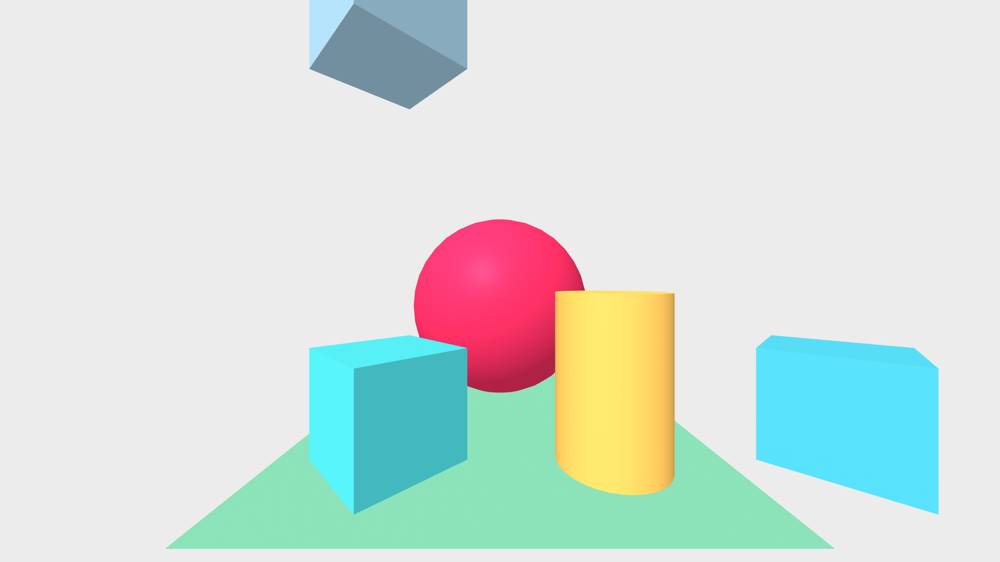
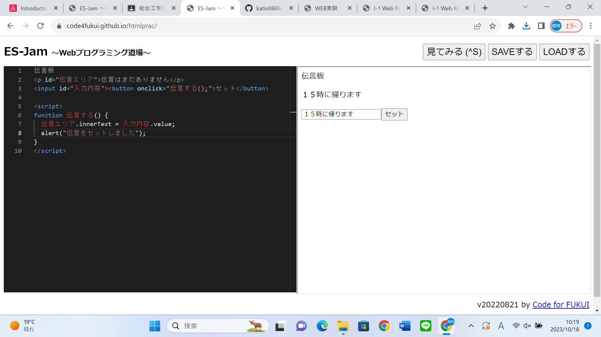

第3週目
3-1 JavaScript体験：VR空間を作る

伝言板
1.内容
WEBプログラミング道場にA-Frameのコードをコピーアンドペーストし，コードの内容について実際に動かしながら学んだ．
2.感想
プログラミングのコードに何が書いてあるのかを初めて知ることができ，想像していたよりも簡単だった．しかし，難しいプログラミングは見たことがないため，それらも見てみたいと感じた．
3-2 JavaScript体験：伝言プログラムを作る

伝言板
1.内容
先生の指示に従いながらコードを書き込み，そのコードに変化を加えながらプログラミングを完成させていき，コードの役割を理解しながらプログラミングを作成した．
2.感想
コードを書き終わって，実際に試してみるとなぜか動かなくて，どこが間違っているか見本を見ながら確かめながらコードを作成していたため，コードのスペルが一文字でも間違っているとうまくプログラミングが動かないことなどを知り．プログラミングは難しいと思い，難しいことをして，それが完成した時の達成感もとてもあり，とても面白かった，
3-3 JavaScriptプログラムの３次元空間の体験
1.内容
A-Frameのプログラミングを３次元空間に対応させて，VRゴーグルを用いて体験する．
2.感想
自分が実際に見て理解したプログラミングのコードが実際に動かすという体験ができて，とても興味深いと感じた．